环境配置指南
在本指南中，我们介绍两种 Python 环境配置的方法. 一种是 Thonny 的安装与使用，另一种是 Visual Studio Code 的安装与使用以及在 VSCode 中运行 Python 需要的环境配置.
重点提示
Thonny 和 VSCode + Python 安装的方式二选一即可，都可以完成本实验。
Thonny 的安装和使用
Thonny 是一个用于学习和教学编程的 Python 集成开发环境（IDE），它可以让程序可视化成为初学者工作流程的天然一部分.它的突出特点包括多种代码单步执行方式、逐步表达式求值、调用栈的直观可视化以及用于解释引用和堆概念的模式.它免费使用且支持扩展.
下载并安装 Thonny

Thonny 界面介绍和使用
点击 Thonny，选择简体中文，打开后其界面应当如下图所示：
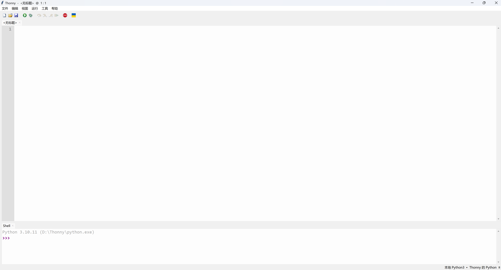
可以看见，其界面的编辑区域分上下两块，其中上面是正常的编辑器，下面是交互式终端. 首先，可以在交互式终端输入命令进行测试：
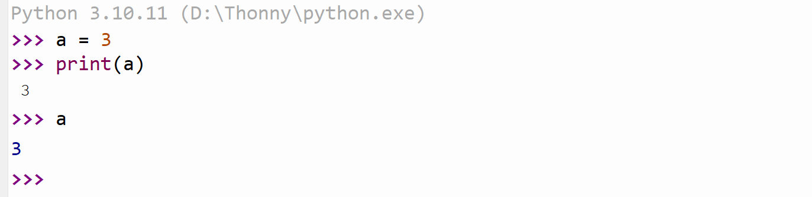
可以看见，输出的两个 3 是有所不同的，这是因为 print 函数是正常的输出函数，而直接输入 a 输出 3 是在交互式终端中的特别结果. 应当注意，在正常的程序编写当中，只有 print 这样的函数会真正产生输出. 接下来在编辑器中尝试输入以下代码：
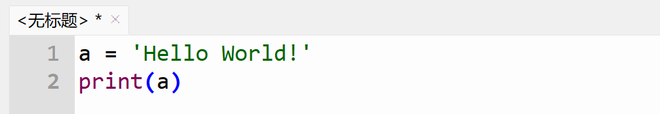
在菜单栏的运行菜单中选择“运行”，如下图所示：
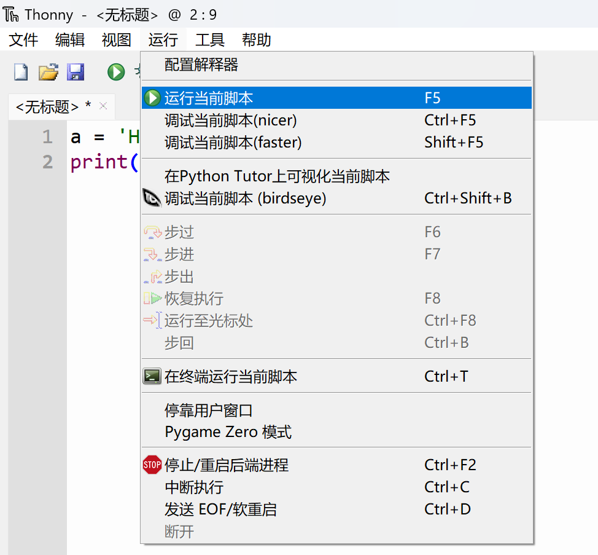
或者你也可以直接点击 F5 进行运行. 注意到，在上图高亮的行末有一个 F5，这是 Thonny 中对快捷键的提示. 你会发现，在交互式终端的窗口中，出现了下面的输出：
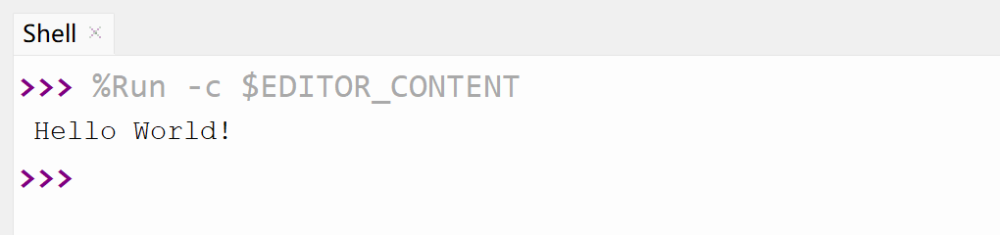
这就表明程序正常运行并输出了结果.
使用 Thonny 进行包管理
点击菜单栏中的工具并选择“管理包…”，如下图：
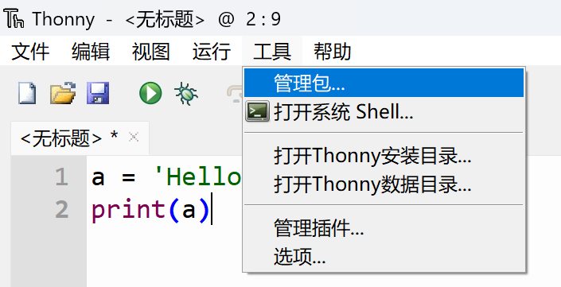
这将打开下图的窗口：
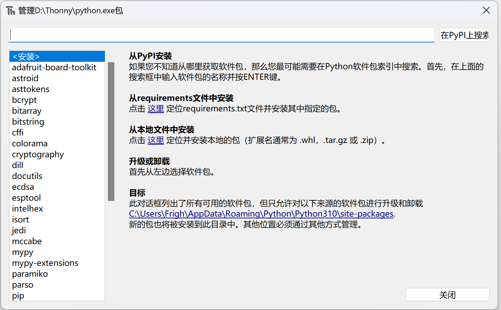
在上面的搜索栏中输入包名，并且点击搜索，打开对应的蓝色链接，这里以 NumPy 为例，你将看到下面的界面：

点击安装并等待安装完成. 安装完成后，安装按钮会变成“升级”和“卸载”，关闭窗口. 可以在交互式终端中使用 import 命令导入包以测试其安装是否完成：
>>> import numpy
如果没有红色报错信息，则说明安装正常.
Visual Studio Code 的安装和使用
进入官方网页下载并安装. 注意，Visual Studio Code（下简称 VSCode）是一个编辑器而非集成开发环境，因此想要在 VSCode 中运行 Python，读者需要先进行 Python 的安装，同时为了更好的使用，我们给出了一些常用的插件.
Python 的安装和命令行使用
Warning
这里的许多配置都并非最佳选项. 在本机上直接安装 Python 及其软件包更为推荐的一种方式是建立虚拟环境，使用例如 conda 之类的工具进行管理，否则可能会出现尾大不掉、甚至版本冲突的问题. 但是在此为了简单起见，我们直接使用本机的基础环境建立 Python 安装，这对于我们的这些实验本身来说足够了. 有兴趣的同学自可查找关于 conda 的相关信息，我们以后也可能会在补充文档中进行介绍.
这里我们仅对 Windows 系统用户进行介绍. 如果使用 macOS，请读者跳到命令行的使用部分，用终端执行对应的指令完成操作. 至于 Linux 系统用户，你都用 Linux 了还需要文档吗？
Python 的下载和安装
打开 Python 官网，点击图示按钮下载 Python 的安装包：
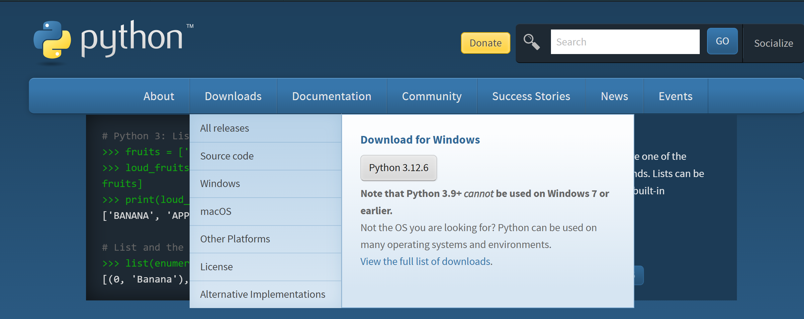
运行安装包进行安装. 在安装过程中，勾选选项 "add to environment variable". 如果没有勾选，会出现在 Powershell 中无法识别指令的问题，请参见“环境变量相关事宜”一节进行解决.
命令行的使用
按 Win+R 打开运行界面，输入 powershell 并回车. 你应当会看到一片蓝色的界面：
其中 Frigh 应该是你的用户名. 在其中输入 python，并回车. 为美观起见，下面笔者的界面都是安装了 Windows Terminal 之后的执行结果，默认终端输入输出无殊.
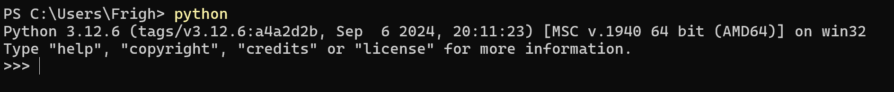
你会发现我们同样进入了交互式终端的界面. 在其中你同样可以进行交互式终端的操作. 输入 exit() 或者 Ctrl+Z 以退出.
在启动台中搜索“终端”，打开终端. 也可以使用快捷键 Cmd+Space，然后输入“终端”进行搜索.
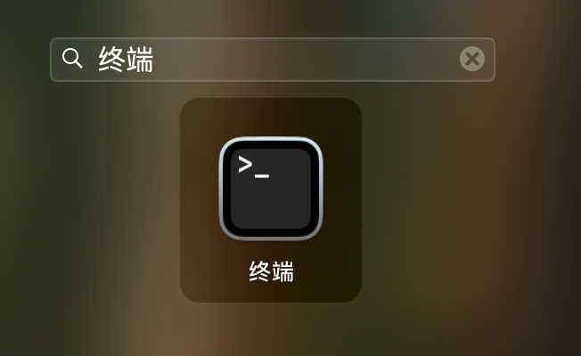
在终端中输入 python3 并回车. 若之前没有使用过命令行工具，会提示安装 Xcode Command Line Tools，按照提示进行安装即可.
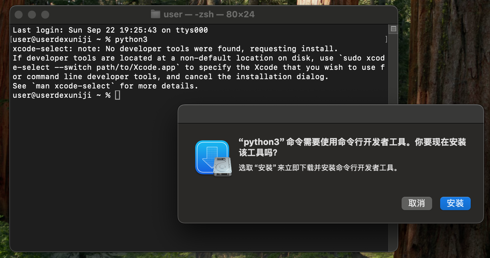
安装完成后，即可通过在终端中输入 python3 并回车进入 Python 交互式终端. 输入 exit() 或者 Ctrl+D 以退出. 在后文中提到在命令行中输入 python 时，macOS 用户应当使用 python3 代替.
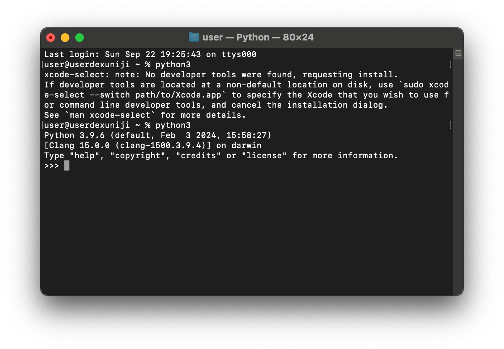
使用 pip 进行包管理
在终端中输入下面的指令并按下回车：
python -m pip install <包名>
其中 <包名> 需要替换成你需要安装的包. 我们以 NumPy 为例：
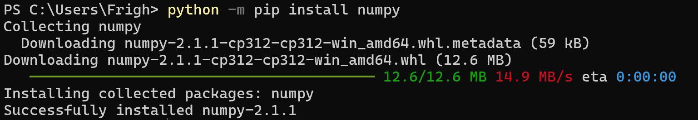
于是 NumPy 就已经安装成功. 同样可以打开交互式终端以验证其安装.
Note
这里我们使用的是
python -m pip install <包名>
而不是一般的教程使用的更精简的
pip install <包名>
这是因为直接使用 pip 指令进行安装的方式在较新的版本中将被弃置.
此外，如果 python 指令不起作用，可以尝试直接使用 py 或者 python3，如果依旧不行，请参阅环境变量相关事宜一节.
环境变量相关事宜
提示
本节仅供 Windows 用户参考.
通俗地讲，环境变量（environment variable / PATH）就是系统在收到一个指令之后应该到哪里去寻找这个指令. 打开 Python 的安装目录，我们会看到一堆 exe 类型的文件：
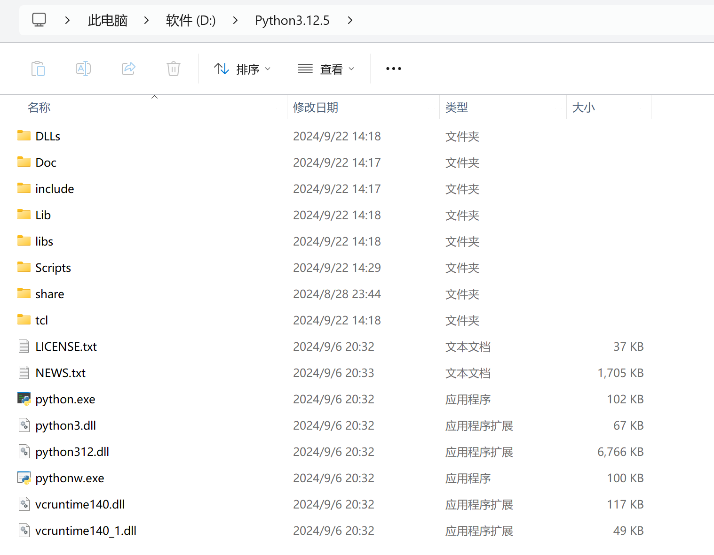
复制这个路径以备使用. 在设置中搜索“环境变量”，打开“修改本账户的环境变量”，你会看到以下窗口：
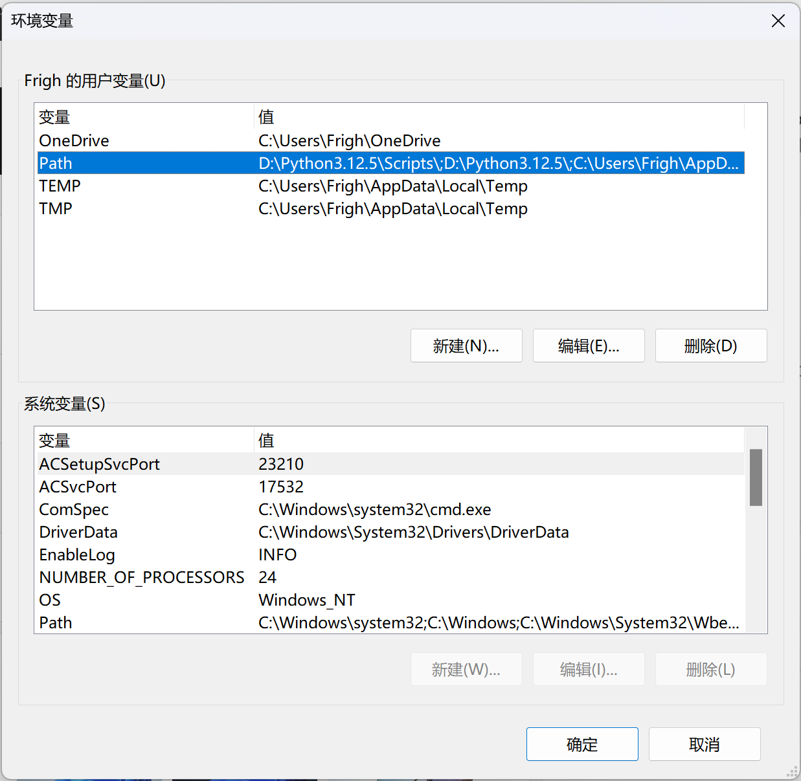
然后选择 Path 变量，点击编辑，将这个目录和 Scripts 目录都加在最前面. 因为笔者使用的安装目录为 D:\Python3.12.5，修改完的 Path 就如上图所示. 修改完后，重启电脑，重新进行操作，你应当能够正常在命令行中执行 python 指令.
一些建议安装的插件
VSCode 一大核心功能就是插件（extensions）. 安装之后打开，会在左侧看到一个图标，如下图所示（图片来自正在写文档的助教工作区）：
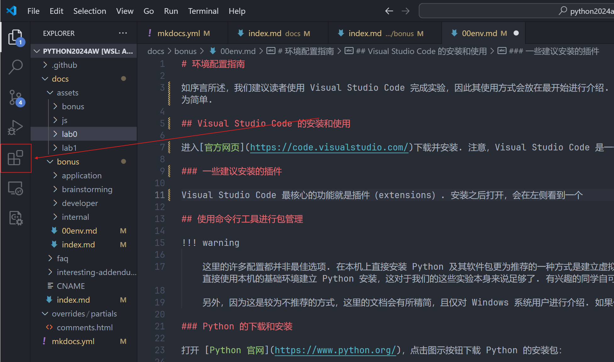
点开，在 Search Extension 当中搜索插件名字，如下图：
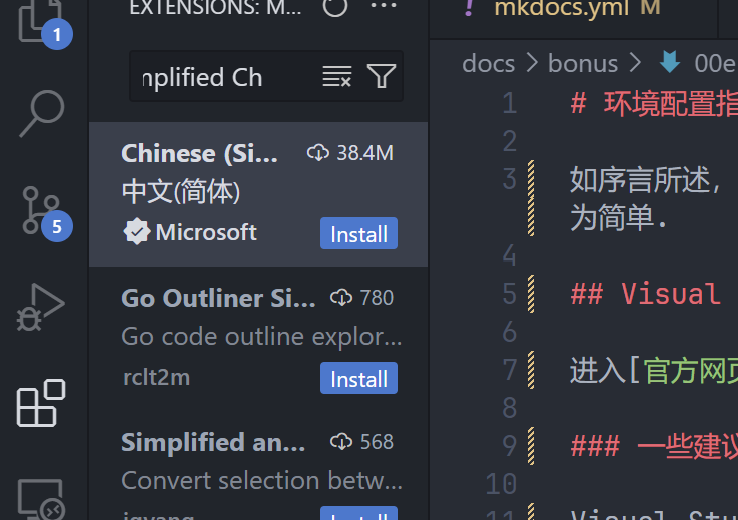
点击 Install 即可安装. 右上角标出的就是下载量，我们推荐的插件下载量都较大，且均由 Microsoft 官方提供，请大家注意辨别. 下面是建议安装的插件配置：
- Chinese (Simplified) (简体中文) Language Pack for Visual Studio Code
- Python
- Pylance
补充设置
按 Ctrl+, 可以打开首选项界面，我们建议打开下面的选项：
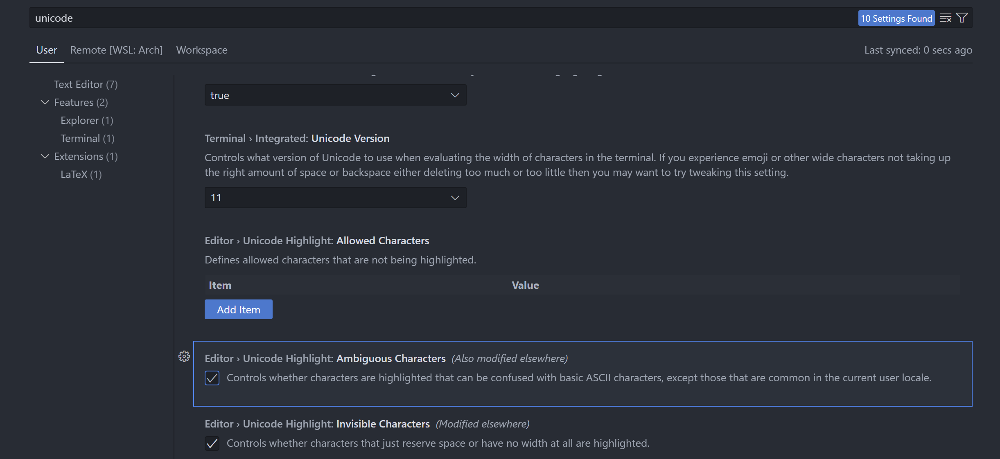
它将高亮代码文件中易混淆的字符，例如中英文括号、逗号、冒号等等. 这些是初学者经常出现的错误. 当然，我们还是建议读者养成良好的输入习惯，防止出现问题.
一些基本概念
在 VSCode 中，代码是以文件夹的形式进行管理的. 点击文件菜单，打开文件夹（或者使用快捷键 Ctrl+K Ctrl+O，意思是依次按下这两个组合）. 可以新建一个空文件夹以开始. 不建议将文件夹放在系统目录（例如桌面）以及使用路径中带有中文的文件夹.
打开文件夹之后，在左侧边栏的第一个按钮点开可以看到一个空页面，可以在此对文件夹中的文件进行管理. 在页面下面有一个终端（如果没有可以用快捷键 Ctrl+` 呼出），其中会有以当前工作目录开头的一个提示. 下面称“使用终端执行”时，也都可以使用这个终端来完成. 需要注意，在修改环境变量（包括安装 Python）之后，需要重启 VSCode 以使更改生效.
使用 VSCode 执行 Python 代码的方式非常简单，在安装推荐插件并按照推荐配置安装 Python 后只要点击右上角即可.
实验提交要求
实验报告要求上传 pdf 文件，其中需要包含以下内容：
- 成功输出
Hello, Python2025的结果截图， - 自己的系统信息、硬件配置以及所使用的 Python 版本信息.
请在 Sept. 30 23:59 之前提交到学在浙大.